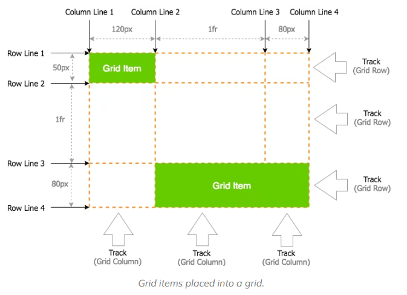
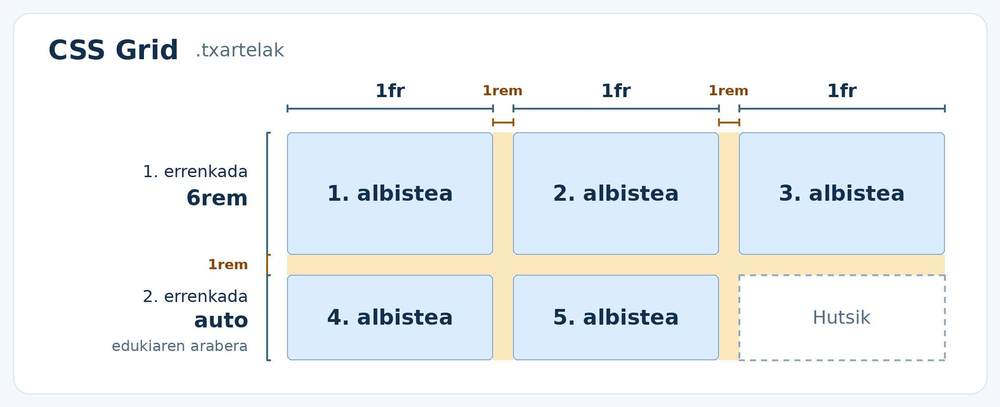
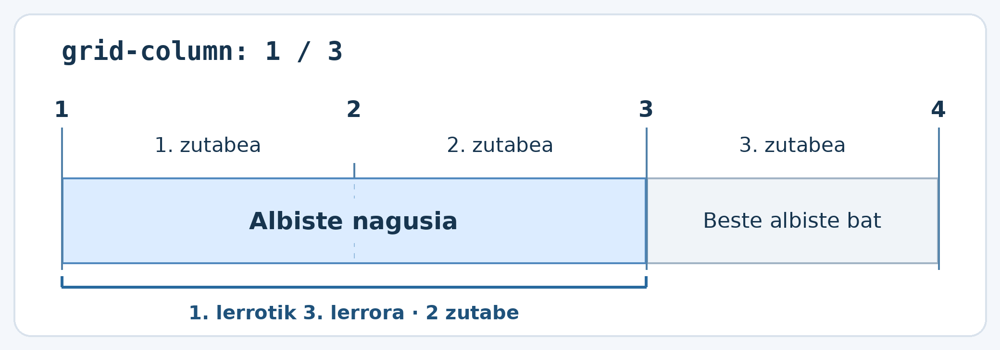
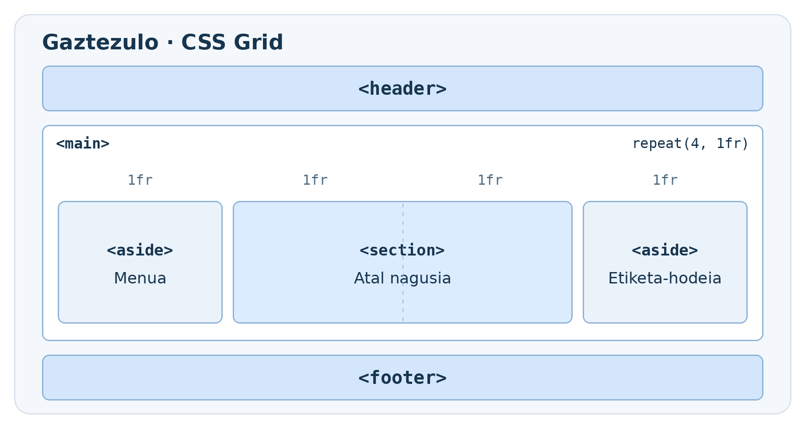
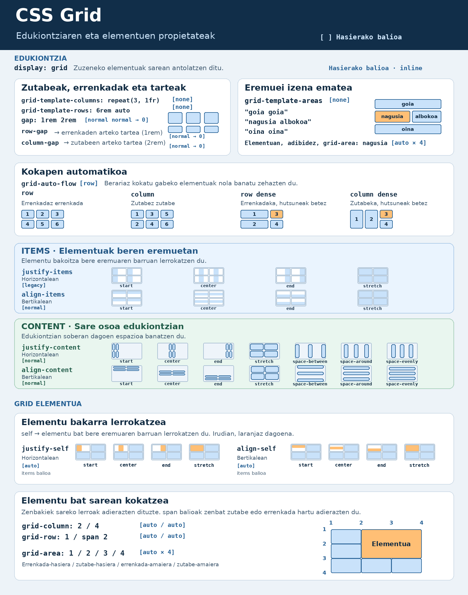

CSS Grid¶
CSS Grid se utiliza para organizar elementos en filas y columnas. Por ejemplo, podemos usarlo para distribuir tarjetas de noticias en tres columnas o para colocar la cabecera, el contenido principal y una barra lateral de una página web.
¿Flexbox o Grid?
Usa Flexbox para organizar elementos en una dirección, por ejemplo, para colocar en una fila los enlaces de un menú. Usa Grid cuando quieras controlar filas y columnas a la vez, por ejemplo, para alinear tarjetas en columnas.
Grid: conceptos básicos¶
Al empezar a trabajar con Grid Layout, hay tres términos clave que conviene entender antes de profundizar en los detalles:
- Grid Container (contenedor Grid): es el contenedor principal del diseño.
Al aplicarle
display: grid, todos sus hijos directos se convierten en elementos Grid o Grid Items. - Grid Item (elemento Grid): son los hijos directos del contenedor Grid y se colocan en las celdas que este crea.
- Grid Line (línea de Grid): son las líneas que definen las filas y las columnas de la cuadrícula.
La combinación de estos conceptos básicos con las propiedades CSS es donde
empieza la magia: grid-template-columns, grid-template-rows,
grid-column-start, grid-column-end y grid-column.

El contenedor y los elementos Grid¶
display: grid se aplica al elemento padre. Este se convierte en el
contenedor Grid, y sus hijos directos son los elementos Grid.
Ejemplo: tarjetas en tres columnas¶
<section class="tarjetas">
<article>Noticia 1</article>
<article>Noticia 2</article>
<article>Noticia 3</article>
<article>Noticia 4</article>
<article>Noticia 5</article>
</section>
.tarjetas {
display: grid;
grid-template-columns: repeat(3, 1fr);
gap: 1rem;
}
.tarjetas > article {
padding: 1rem;
background-color: #e8f1fa;
}
El navegador coloca las tarjetas en el orden del HTML. Cuando completa la primera fila, crea automáticamente la siguiente.
| Columna 1 | Columna 2 | Columna 3 |
|---|---|---|
| Noticia 1 | Noticia 2 | Noticia 3 |
| Noticia 4 | Noticia 5 |
Hijos directos
En el ejemplo, section es el contenedor y los elementos article son
los que se colocan en la cuadrícula. Si añadimos un h2 dentro de un
article, el título queda dentro de la tarjeta.
Columnas, filas y espacios¶
Ancho de las columnas¶
Cada valor de la propiedad grid-template-columns define una columna.
La unidad fr representa una fracción del espacio libre de Grid. Antes de
repartir ese espacio, se descuenta el ocupado por las medidas fijas y los
espacios entre elementos.
| Valor | Resultado |
|---|---|
1fr 1fr 1fr |
Tres columnas; cada una ocupa una parte del espacio disponible. |
repeat(3, 1fr) |
Forma abreviada de la opción anterior. |
2fr 1fr |
Dos columnas; la primera ocupa dos partes y la segunda una. |
220px 1fr |
La primera columna ocupa 220 px y la segunda, el espacio restante. |
Altura de las filas¶
La propiedad grid-template-rows define la altura de las filas. Si quieres
que las filas crezcan según su contenido, deja la altura sin especificar.
.tarjetas {
display: grid;
grid-template-columns: repeat(3, 1fr);
grid-template-rows: 6rem auto;
gap: 1rem;
}

La primera fila tiene una altura de 6rem. La altura de la segunda se
calcula según su contenido. Si se añaden más tarjetas, Grid crea
automáticamente más filas.
Espacio entre elementos¶
La propiedad gap establece el espacio entre las filas y las columnas;
en la imagen anterior, es el espacio que aparece en naranja. Si también
quieres espacio en los bordes del contenedor, utiliza padding.
gap: 1rem; /* El mismo espacio en ambas direcciones */
gap: 1rem 2rem; /* 1rem entre filas y 2rem entre columnas */
Hacer que la noticia principal ocupe dos columnas¶
La sección de noticias tiene tres columnas. Queremos que la noticia principal ocupe las dos primeras columnas y que la otra noticia aparezca en la tercera.
<section class="noticias">
<article class="principal">Noticia principal</article>
<article>Otra noticia</article>
</section>
.noticias {
display: grid;
grid-template-columns: repeat(3, 1fr);
}
.principal {
grid-column: 1 / 3;
}
Al principio y al final de las columnas hay líneas de columna. La primera columna está entre las líneas 1 y 2, y la segunda, entre las líneas 2 y 3.
Al escribir grid-column: 1 / 3, la noticia principal empieza en la
línea 1 y termina en la línea 3. Ese espacio abarca dos columnas.

¿Y en las filas?
La propiedad grid-row utiliza las líneas de las filas. Por ejemplo,
al escribir grid-row: 1 / 3, el elemento ocupa las dos primeras filas.
Ejemplo: maquetar una página web¶
La cabecera y el pie de página ocupan todo el ancho. En el centro, el contenido principal ocupa dos partes y la barra lateral, una. En pantallas estrechas, todas las secciones aparecen en una sola columna, en el orden del HTML.
<body>
<header></header>
<main class="maquetacion">
<aside aria-label="Menú"></aside>
<section class="seccion-principal" aria-label="Sección principal"></section>
<aside aria-label="Nube de etiquetas"></aside>
</main>
<footer></footer>
</body>
header,
footer {
min-height: 4rem;
background-color: #d3e6fb;
}
.maquetacion {
display: grid;
grid-template-columns: repeat(4, 1fr);
gap: 1rem;
margin-block: 1rem;
}
.maquetacion > aside {
min-height: 12rem;
background-color: #eaf2fa;
}
.seccion-principal {
grid-column: 2 / 4;
background-color: #dcecff;
}

Otras propiedades de Grid¶
En el ejemplo, hemos utilizado grid-template-columns para crear las
columnas y grid-column para que la sección principal ocupe dos de ellas.
Grid también tiene propiedades para alinear elementos y distribuir el
espacio dentro de la cuadrícula.
Para interpretar la imagen, fíjate en qué es lo que se mueve:
- Todos los elementos, cada uno dentro de su área →
justify-itemspara alinearlos horizontalmente yalign-itemspara alinearlos verticalmente. - Un solo elemento dentro de su área →
justify-selfpara alinearlo horizontalmente yalign-selfpara alinearlo verticalmente. - Toda la cuadrícula dentro del contenedor →
justify-contentpara distribuir el espacio horizontal sobrante yalign-contentpara distribuir el espacio vertical sobrante.
